Maharashtra: Maza Maharashtra
Jai Maharashtra — Land of Forts, Saints, Revolutionaries, and Limitless Modern Innovation
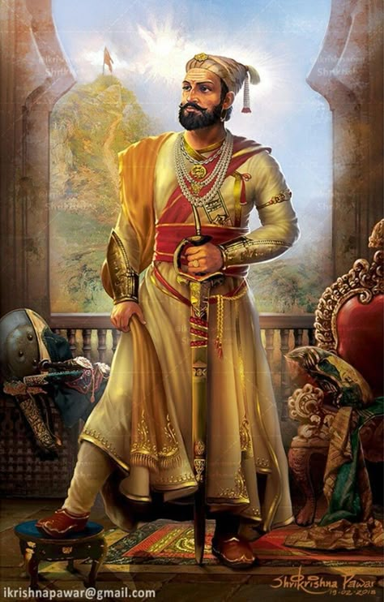
Maharashtra at a Glance
Geographic grandeur, administrative hubs, and iconic natural symbols defining the powerhouse state of India.
Capital
Mumbai (Financial Hub)
Winter Capital
Nagpur
Formation Day
1 May 1960
Geographic Area
307,713 sq km (3rd in India)
Official State Symbols
State Animal
Shekru (Indian Giant Squirrel)
State Bird
Harial (Yellow-Footed Green Pigeon)
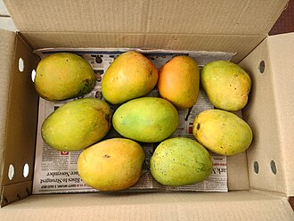
State Tree
Mango (Hapus / Alphonso)
State Flower
Jarul (Taman)
All Maharashtra Regions
Covering Konkan, Western Maharashtra (Desh), Khandesh, Marathwada, and Vidarbha.
Click any region pill above or tap the interactive map polygons directly to inspect each zone's unique geography, culture, and district profile.
Rivers & Western Ghats (Sahyadri)
The mighty Western Ghats run along the coast, nurturing lifeline rivers including Godavari, Krishna, Bhima, Tapi, Koyna, and Wainganga.
Glorious Historical Odyssey
From ancient cave excavations and Maratha Swarajya to the Indian Independence Struggle and statehood.
Satavahana Dynasty
Ruled from Pratishthana (Paithan), patronized rock-cut Buddhist architecture at Karla, Bhaja, and Ajanta caves, and established maritime trade networks.
Chalukyas, Rashtrakutas & Yadavas
Golden era of temple architecture including the monolithic Kailash Temple at Ellora; Yadavas ruled from Devagiri (Daulatabad), cultivating early Marathi literature.
Chhatrapati Shivaji Maharaj & Hindavi Swarajya
Establishment of 'Hindavi Swarajya', guerrilla warfare (Ganimi Kawa), indigenous navy, and formal coronation as Chhatrapati at Raigad in 1674.
Chhatrapati Sambhaji & War of Independence
Chhatrapati Sambhaji Maharaj and Maharani Tarabai fought a fierce 27-year war of resistance against Mughal armies across the Sahyadri ranges.
Maratha Confederacy & Peshwa Era
Expansion of the Maratha Empire under Peshwa Bajirao I across northern, central, and southern India, establishing Pune as the political powerhouse.
Indian Freedom Struggle
Epicenter of nationalism led by Lokmanya Tilak, Mahatma Gandhi launching 'Quit India' from Gowalia Tank (Mumbai in 1942), and social renaissance movements.
Samyukta Maharashtra Movement & 1 May 1960
Unification of all Marathi-speaking areas championed by 106 Martyrs (Hutatma Smarak). Official establishment of the State of Maharashtra on 1 May 1960.
Legendary Maratha Forts
Ingenious military hill and sea bastions engineered for Swarajya by Chhatrapati Shivaji Maharaj.
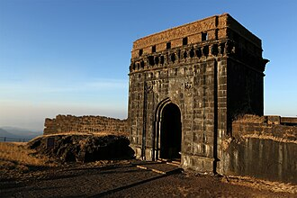
Raigad Fort (रायगड)
The sovereign capital of the Maratha Empire. Site of Shivaji Maharaj's coronation (Rajyabhishek) in 1674, perched at 2,700 ft with the legendary Hirkani cliff.
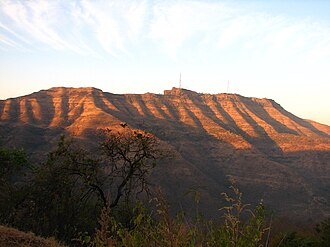
Sinhagad Fort (सिंहगड)
Originally Kondhana, recaptured by Tanaji Malusare in 1670. Famously honored with the saying: "Gad aala pan sinh gela" (We gained the fort, but lost the lion).
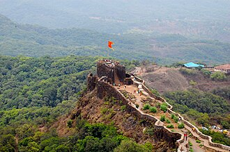
Pratapgad Fort (प्रतापगड)
Built in 1656 overlooking the dense Jawali forests. Landmark site of the decisive confrontation between Shivaji Maharaj and Afzal Khan.
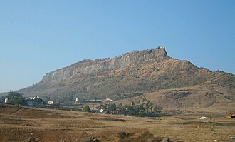
Shivneri Fort (शिवनेरी)
The revered birthplace of Chhatrapati Shivaji Maharaj (19 February 1630) near Junnar, equipped with seven formidable defensive gates.
Rajgad Fort (राजगड)
The first royal capital of the Maratha Empire for over 25 years. Masterpiece layout with Padmavati, Suvela, and Sanjivani machis.
Sindhudurg Fort (सिंधुदुर्ग)
Impregnable ocean fortress constructed on Kurte Island off Malvan coast in 1664, representing the foundation of Maratha naval mastery.
UNESCO Rock-Cut Architecture
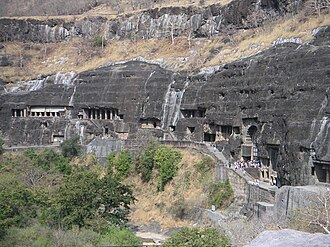
Ajanta Caves (अजिंठा)
30 rock-cut Buddhist cave monuments (2nd century BCE to 480 CE) renowned for expressive frescoes, master paintings, and Jataka tale murals.
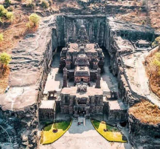
Ellora Caves (वेरूळ)
34 rock excavations celebrating Buddhist, Hindu, and Jain coexistence; home to the Kailash Temple, carved top-to-bottom from a single monolithic basalt cliff.
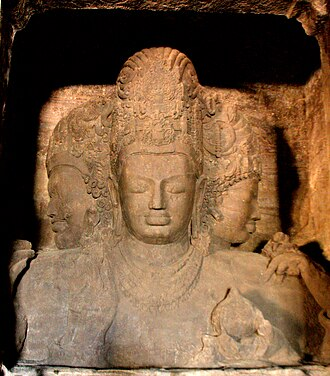
Elephanta Island (घारापुरी)
Island cave temples off Mumbai harbour dedicated to Lord Shiva, famous for the magnificent 20-foot tall Trimurti (Sadashiva) sculpture.
People, Reformers & Society
A society nurtured by monumental social reforms, egalitarian philosophy, and vibrant cultural communities.
Pioneering Social Reformers
Mahatma Jyotirao Phule
Pioneered women's education, founded the Satyashodhak Samaj, attacked caste discrimination, and advocated for farmers' rights.
Krantijyoti Savitribai Phule
Started the first girls' school at Bhide Wada, Pune in 1848; broke untouchability taboos and opened care shelters for widows.
Dr. B. R. Ambedkar
World-renowned jurist and economist who championed human rights, led the Mahad Satyagraha, and enshrined liberty, equality, and fraternity into law.
Rajarshi Chhatrapati Shahu Maharaj
Visionary ruler of Kolhapur who introduced India's first 50% reservation for backward classes in 1902 and provided free compulsory schooling.
Communities & Tribes
A harmonious mosaic including Marathi farmers, agrarian Kunbis, coastal Kolis (Mumbai's original fisherfolk), Konkanis, and indigenous tribal communities such as Warli, Bhil, Gond, Korku, and Katkari.
Maharashtra Dharma
The philosophical soul popularized by saint Ramdas and justice Ranade: ethical righteousness, brotherhood across castes, defense of dignity, and selfless devotion to public welfare.
Hospitality & Resilience
'Atithi Devo Bhava' in action: warmth of rural wada homes, sharing pitla-bhakri with travelers, the unshakeable Mumbai spirit in crises, and devotion to the warkari ethos.
Language & Literature
Celebrated in October 2024 as a Classical Language of India, with 2,000+ years of vibrant prose, poetry, and theatre.
Learn 10 Common Marathi Phrases (Click Card to Flip)
Saint Poets & Varkari Literature
- Sant Dnyaneshwar (1275–1296): Authored Bhavartha Deepika (Dnyaneshwari) at age 16, democratizing spiritual knowledge in Marathi.
- Sant Tukaram (1608–1649): Composed over 4,500 soul-stirring Gatha Abhangas challenging social hypocrisy.
- Sant Eknath (1533–1599): Composed playful yet profound Bharuds and taught universal empathy.
- Sant Namdev: Spread bhakti poetry to Punjab; his hymns are preserved in the Sikh Guru Granth Sahib.
Modern Literary Icons & Theatre
- Pu. La. Deshpande (P. L.): Beloved humorist, playwright, and cultural heartbeat of modern Maharashtra.
- V. S. Khandekar: First Marathi author to win the Jnanpith Award (for the classic novel Yayati in 1974).
- Kusumagraj (V. V. Shirwadkar): Jnanpith laureate whose birth anniversary (27 Feb) is celebrated as Marathi Bhasha Gaurav Din.
- Vijay Tendulkar: Revolutionary dramatist behind timeless plays like Ghashiram Kotwal and Sakharam Binder.
Culture & Living Traditions
Experience high-energy festivals, rhythmic folk dances, timeless attire, and master artisan crafts.
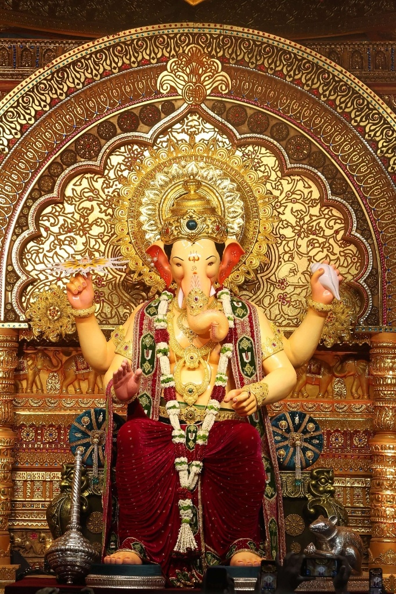
Ganesh Chaturthi (गणेशोत्सव)
The grandest 10-day extravaganza! Massive mandals (Lalbaugcha Raja, Dagdusheth Halwai), rhythmic Dhol-Tasha pathaks, and immersion on Anant Chaturdashi.
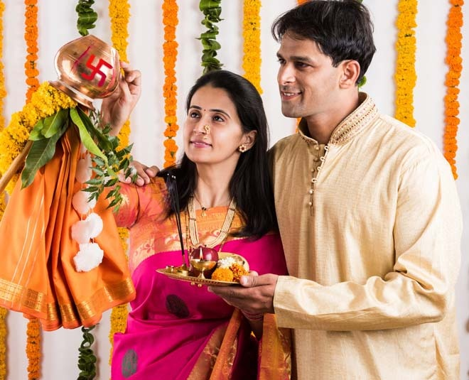
Gudi Padwa (गुढीपाडवा)
The Marathi New Year marking the dawn of Chaitra. Families hoist the auspicious silk-draped Gudi, take out Shobha Yatras, and feast on Shrikhand-Puri.
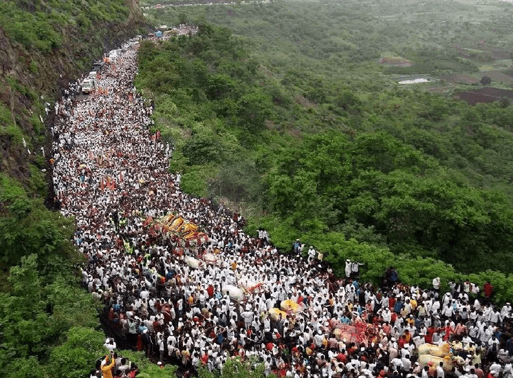
Pandharpur Wari (आषाढी वारी)
800-year-old walking pilgrimage of millions of warkaris singing 'Gyanba Tukaram' across 250 km to meet Lord Vitthal and Rukmini on Ashadhi Ekadashi.
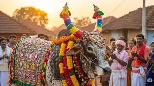
Bail Pola (बैल पोळा)
Heartwarming rural festival where agrarian families express gratitude to bullocks and cattle by bathing, decorating, and worshipping them.
Nauvari Saree (नऊवारी साडी)
Traditional nine-yard drape worn like a dhoti, offering regal grace and mobility. Worn by Rani Lakshmibai in battle and at Maharashtrian weddings.
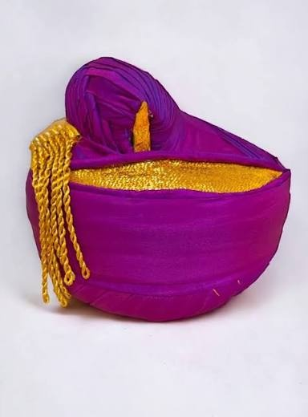
Pheta & Puneri Pagdi (फेटा)
Traditional ceremonial headgear wrapped in saffron, white, or Kolhapuri style, signifying honor and royal Maratha valor.
Kolhapuri Chappal (कोल्हापुरी चप्पल)
GI-tagged handcrafted vegetable-tanned leather sandals originating in Kolhapur since the 13th century, prized for artisan durability.
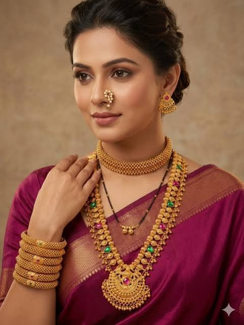
Nath, Thushi & Kolhapuri Saaj
Intricate gold heirloom jewellery including the paisley-shaped pearl nose-ring (Nath), snug choker (Thushi), and 21-pendant Kolhapuri Saaj.
Lavani Dance (लावणी)
High-energy folk dance characterized by rapid rhythmic footwork, synchronized Dholki beats, and vibrant storytelling in nine-yard sarees.
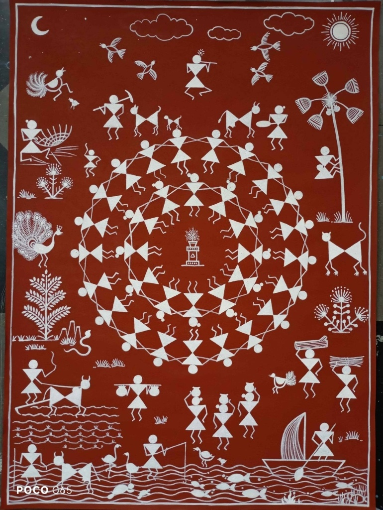
Warli Art (वारली चित्रकला)
Centuries-old tribal painting using basic geometric figures (circles, triangles, lines) painted with white rice paste on ochre mud walls.
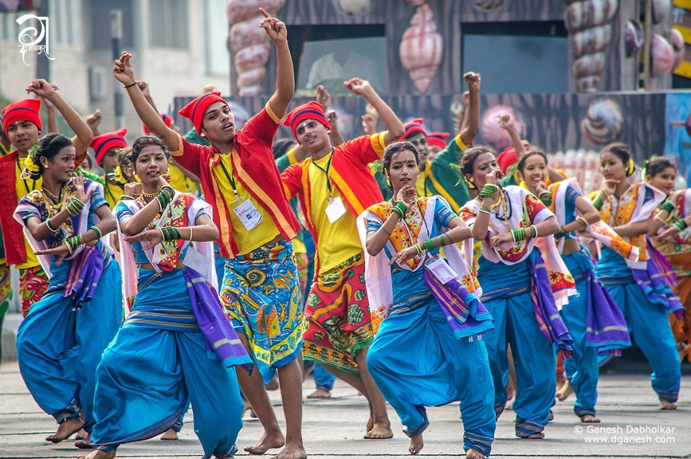
Koli Dance (कोळी नृत्य)
Lively folk dance of the seafaring Koli fishing community depicting waves, rowing of boats, and netting catches to lively coastal tunes.

Bharud (भारुड)
Interactive rural theatre blending social satire, musical skits, devotional metaphors, and theatrical humor directly for public audiences.
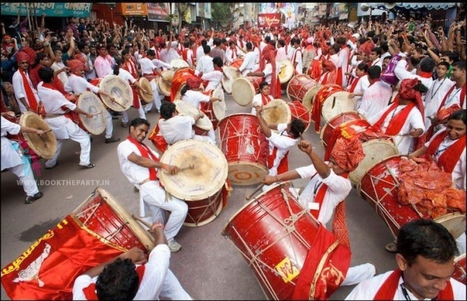
Dhol-Tasha & Lezim
Thunderous percussion ensembles performed during Ganeshotsav and Shivjayanti, creating acoustic vibrations and communal unity.

Tutari (तुतारी)
Traditional curved brass wind instrument blown to announce the arrival of royalty, dignitaries, and victorious warriors.

Powada & Daf (पोवाडा)
Heroic ballads sung by Shahirs with the tambourine-like Daf, stirring audiences with tales of Shivaji Maharaj's battles.
Natyasangeet & Abhang
Semi-classical vocal music tradition integral to Marathi musical drama (Sangeet Natak), accompanied by harmonium and tabla.

Haldi-Kunku & Tilgul
Social gatherings celebrating sisterhood during Makar Sankranti with the sweet blessing: "Tilgul ghya, god god bola" (Eat sesame sweets, speak sweetly!).

Gondhal (गोंधळ)
Sacred midnight theatrical ritual in praise of Goddess Bhavani of Tuljapur or Renuka of Mahur, performed during auspicious family milestones.

Mangalagaur (मंगळागौर)
Traditional ritual during the holy month of Shravan where newly married women perform 100+ folk games (Zimma, Fugdi) late into the night.
Sanskar Bharati Rangoli
Intricate, vibrant powder patterns hand-drawn outside front thresholds every morning to welcome prosperity and positive energy into the home.
Maharashtrian Cuisine
From coastal coconut curries to spicy Vidarbha gravies and beloved Mumbai street delicacies.
Regional Flavors
Ukadiche Modak & Solkadhi
Steamed rice flour dumplings stuffed with fresh coconut and jaggery; paired with tangy pink kokum-coconut digestive solkadhi.

Tambda & Pandhra Rassa
Fiery red chili broth ('Tambda') contrasted with aromatic, coconut-simmered white broth ('Pandhra') paired with spiced mutton and Kolhapuri Misal.
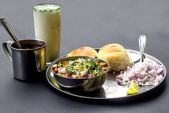
Puneri Misal
Spicy rolled fried savory pinwheels from Chitale Bandhu, and topped sprout curry misal served with toasted butter pav.
Saoji Cuisine & Orange Barfi
Distinctive spicy heritage masala prepared by Halba Koshti weavers, followed by Nagpur's famous citrus orange barfi.
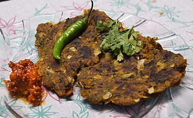
Pithla Bhakri & Thecha
Gram-flour curry cooked with garlic, eaten hot with coarse jowar/bajra bhakri, raw onion, and fiery crushed green chili thecha.

Puran Poli & Katachi Amti
Sweet chana-dal stuffed flatbread flavored with cardamom and nutmeg, drizzled with pure cow ghee and tangy chana stock curry.
Celebrated Street Foods

Destinations & World Heritage
Discover misty Sahyadri hill stations, golden beaches, UNESCO World Heritage monuments, and sacred pilgrimage shrines.
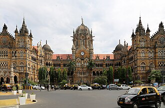
Mumbai Ensemble & CSMT
Chhatrapati Shivaji Maharaj Terminus (Victorian Gothic architectural masterpiece) and the Victorian & Art Deco Ensemble along Marine Drive.
Ajanta & Ellora Caves
Rock-cut sanctuaries in Chh. Sambhajinagar, spanning 800 years of Buddhist, Hindu, and Jain sculpture, including the monumental monolithic Kailash Temple.

Mahabaleshwar & Panchgani
Crown of the Sahyadri mountains at 4,400 ft, known for year-round pleasant climate, strawberry farms, and panoramic Arthur's Seat cliff.

Lonavala & Khandala
Scenic monsoon paradise nestled in the Western Ghats, famous for chikki confectionery, Karla-Bhaja rock caves, and Tiger's Leap view.
Alibaug & Kashid Coast
Pristine white sand beaches along the Konkan coast with ocean fort Kolaba accessible during low tide and serene water sports.
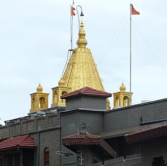
Ashtavinayak & Shirdi
Sacred circuit of 8 self-manifested Ganesha temples around Pune, alongside Shirdi, home to millions seeking blessings of Sai Baba.

Maharashtra's 5 Jyotirlingas
Home to 5 of India's 12 Jyotirlinga shrines: Trimbakeshwar (Nashik), Bhimashankar (Pune), Grishneshwar (Ellora), Aundha Nagnath, and Parli Vaijnath.
Tadoba Andhari Tiger Reserve
Maharashtra's premier tiger sanctuary in Chandrapur, harboring one of the highest densities of Royal Bengal Tigers, leopards, and sloth bears.
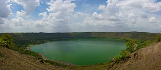
Lonar Meteorite Crater Lake
The world's only hyper-velocity meteorite impact crater formed in basaltic rock 52,000 years ago in Buldhana, creating a unique saline-alkaline closed eco-lake.
Economy, Industry & Megaprojects
India's undisputed economic growth engine contributing ~14% to the national GDP.
Next-Gen Infrastructure Marvels
Centers of Higher Learning & Research
Home to premier scientific, engineering, and medical institutions: IIT Bombay (Powai), COEP Technological University (Pune, founded 1854), ICT (Mumbai), TIFR (Tata Institute of Fundamental Research), BARC (Bhabha Atomic Research Centre), and NCL (National Chemical Laboratory).
Renowned Personalities
Great visionaries, rulers, scientists, artists, and athletes who shaped the state and the nation.
Chhatrapati Shivaji Maharaj
Visionary ruler, strategist, naval pioneer, and champion of secular people-first governance.
Maharani Tarabai
Regent of the Maratha Empire who organized guerrilla resistance against Mughal armies across the Deccan.
Dr. B. R. Ambedkar
Bharat Ratna, economist, and human rights champion who led revolutionary equality movements.
Mahatma Jyotirao Phule
Founded the Satyashodhak Samaj and championed universal education for women and depressed classes.
Lokmanya Bal Gangadhar Tilak
Nationalist leader who declared: "Swaraj is my birthright and I shall have it!" and transformed public Ganeshotsav.
Lata Mangeshkar
Legendary playback singer with over 30,000 songs across 36 languages spanning seven decades.
Dadasaheb Phalke
Directed India's first full-length feature film Raja Harishchandra (1913), launching the world's largest film industry.
Pu. La. Deshpande
Master satirist, musician, and stage performer whose wit defines 20th-century Marathi literature.
Sachin Tendulkar
All-time highest international run-scorer with 100 international centuries, born and raised in Mumbai.
Khashaba Dadasaheb Jadhav
Wrestler from Satara who won independent India's first individual Olympic medal (Bronze at 1952 Helsinki).
Dr. Homi Jehangir Bhabha
Visionary nuclear physicist who founded TIFR and launched India's indigenous three-stage atomic energy program.
Ratan Tata
Iconic chairman of Tata Sons who elevated Indian business globally while giving 65%+ of profits back to healthcare and education.
Engineering Marvels & AI Corner
Connecting ancient rock-cut hydraulics and fort engineering with modern AI and data analytics.
Ancient Fort Water Hydraulics
Maratha hill forts (Raigad, Sinhagad, Rajgad) survived prolonged sieges through rock-cut tanks (Taake), gravity feed channels, and natural contour silt-settling filtration engineered directly into basalt rock.
Ajanta-Ellora Rock Excavation
The Kailash Temple at Ellora required the removal of 200,000 tonnes of basalt rock using only hammers and chisels, carved from top-to-bottom with millimeter architectural precision.
Modern Infrastructure Titans
From the Koyna Hydroelectric Project (India's largest completed hydroelectric plant) to the 21.8 km Atal Setu sea bridge and Samruddhi Highway's smart tolling and wildlife underpasses.
Data Science Dashboard • Maharashtra Metrics
Population Share by Division
Major Agricultural Production (Lakh MT)
State Festival Calendar Distribution
Sectoral GDP Contribution (%)
Maharashtra Challenge Quiz
Test your knowledge about Maharashtra's heritage, culture, geography, and heroes!
How well do you know Maharashtra?
Answer 10 randomized multiple-choice questions to claim your honorary title and test your cultural awareness!
Our Competition Stall
Department of Artificial Intelligence & Data Science • Unity in Diversity 2026
Authentic Cuisine
Ukadiche Modak, Puran Poli with cow ghee, Mumbai Vada Pav, and chilled digestive Solkadhi.
Traditional Costumes
Students dressed in nine-yard Nauvari sarees, Paithani borders, saffron Phetas, and Nehru caps.
Cultural Artifacts
Warli canvas art, brass Samai lamps, authentic Kolhapuri Chappals, and hand-woven Paithani silk.
Engineering & AI Aspect
Interactive web portal with data analytics dashboard, offline keyword AI chatbot, and fort hydraulic models.